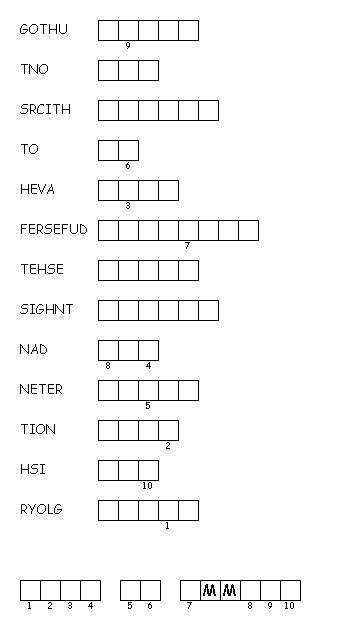

This week's lessons: Acts 2:14a, 36-41 , Psalm 116: 1-4, 12-19, 1 Peter 1:17-23, Luke 24:13-35
This
week's lessons: Acts
2:14a, 36-41 , Psalm
116: 1-4, 12-19, 1
Peter 1:17-23, Luke
24:13-35
Middle-School Pew-work
|
Imagine meeting Jesus while you're doing something that's part of your normal life: 1) What situation are you imagining? ______________________________________________________________________________________ 2) What would you ask Jesus about? ______________________________________________________________________________________ ______________________________________________________________________________________ _______________________________________________________________________________________ 1) What do you imagine Jesus would answer? _______________________________________________________________________________________________________________________________________________________________________________________________________________________________________________________________________________________________________________________________________________________________________________________________________________________________ |
 Created by Puzzlemaker at DiscoverySchool.com |
Next week's lessons: Acts 2:42-47, Psalm 23, 1 Peter 2:19-25, John 10:1-10